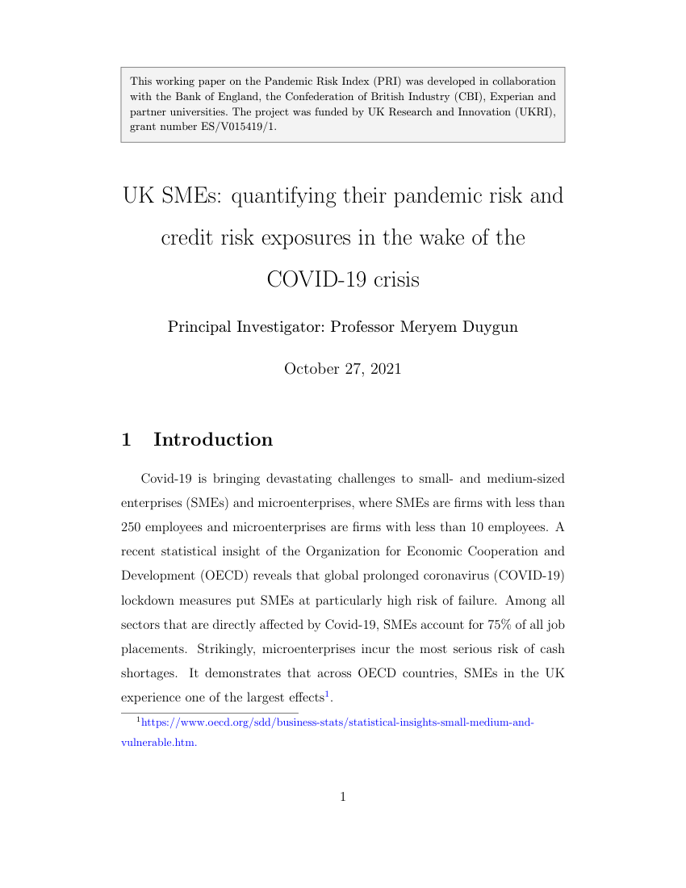

Working paper · October 2021
UK SMEs: quantifying their pandemic risk and credit risk exposures in the wake of the COVID-19 crisis
Principal Investigator: Professor Meryem Duygun
This working paper on the Pandemic Risk Index (PRI) was developed in collaboration with the Bank of England, the Confederation of British Industry (CBI), Experian and partner universities. The project was funded by UK Research and Innovation (UKRI), grant number ES/V015419/1.

116 pages · PDF
About the paper
COVID-19 lockdowns put small and medium-sized enterprises (SMEs) at particular risk of failure, and UK SMEs were among the hardest hit across OECD countries. Government loan schemes offered short-term relief, but lenders still need to assess the credit risk of a very diverse population of SMEs.
This paper builds a Pandemic Risk Index (PRI) framework that condenses firm-level, regional, sectoral and national information into a small set of indices, and tests how well they predict UK firms' post-COVID solvency. It also applies machine learning, network analysis and clustering to SME credit assessment.
Firm-level indices
Financial, non-financial and overall indices, built by principal component analysis from firms' pre-COVID accounts and characteristics.
Regional Covid Social Index
A composite of ONS survey measures of COVID's social impact on households: anxiety, self-isolation, pessimism, affordability and access to information.
Sectoral Covid Exposure Index
Ranks 66 sectors by their stock-market reaction on 16–17 March 2020, when the Prime Minister announced the first COVID-19 restrictions.
Machine-learning credit assessment
Boosting models estimated for the 12 UK regions, plus network analysis and K-means clustering to identify firms with similar credit profiles.
Key findings
- A firm's pre-COVID credit score is the strongest single predictor of its post-COVID credit score: one standard deviation higher goes with a score about 21 points higher (on a 0–100 scale).
- The firm-level indices are significant predictors: one standard deviation higher goes with a post-COVID credit score about 2 to 3.6 points higher.
- Firms in regions with more COVID-19 cases had lower post-COVID credit scores (about 2.9 points per standard deviation). Higher sectoral exposure and stricter national restrictions are also linked to lower scores once all factors are combined (about 1.4 and 1.3 points per standard deviation).
- The indices also predict the value of County Court Judgements issued against firms after 1 April 2020. For example, a one-standard-deviation higher firm-level overall index goes with judgement values about 50% higher, and a higher pre-COVID credit score with values about 6.5% lower.
- Results for SMEs are qualitatively similar to those for all UK firms.
- Among machine-learning models, boosting methods performed best and LightGBM was the fastest. The regional models reach an R² of 0.71–0.79 when estimating credit scores.
- A firm's post-COVID credit score depends not only on its own pre-COVID score but also on those of peers with similar credit profiles, identified through network analysis and K-means clustering.
Most affected sectors
Market-adjusted stock returns on 16–17 March 2020 (Table 8)
| Sector | Return |
|---|---|
| Local and interurban passenger transit | −46.09% |
| Eating and drinking places | −28.21% |
| Apparel and accessory stores | −24.85% |
| Amusement and recreation services | −24.47% |
| Miscellaneous services | −23.56% |
| Transportation by air | −22.80% |
| Hotels and other lodging places | −21.05% |
62 of the 66 sectors fell. Only tobacco products, general merchandise stores, insurance agents and non-classified sectors rose slightly.
Data
218,858 UK firms
Accounts and firm characteristics from the FAME database (Bureau van Dijk) for firms with accounts in 2019, 2020 and 2021, extracted on 5 March 2021.
Credit outcomes
Credit scores (0–100) and County Court Judgements before and after 1 April 2020.
Regional and national data
ONS survey on the social impacts of COVID-19, UK government COVID-19 case data, regional household income (GDHI) and the Oxford COVID-19 Government Response Tracker.
Market data
Stock returns from Capital IQ, used to measure each sector's exposure to the lockdown news.
Partners and funding
- Bank of England
- Confederation of British Industry (CBI)
- Experian
- Partner universities
Funded by UK Research and Innovation (UKRI), grant number ES/V015419/1. Principal Investigator: Professor Meryem Duygun.